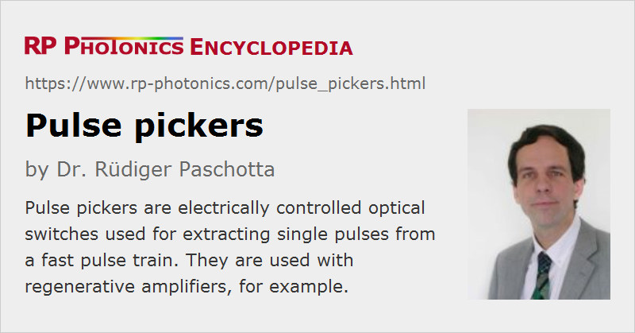

Pulse Pickers
Definition: electrically controlled optical switches used for extracting single pulses from a pulse train
German: Pulsauswähler
Categories: photonic devices, light pulses
How to cite the article; suggest additional literature
Author: Dr. Rüdiger Paschotta
Ultrashort pulses are in most cases generated by a mode-locked laser in the form of a pulse train with a pulse repetition rate of the order of 10 MHz – 10 GHz. For various reasons (see below), it is often necessary to pick certain pulses from such a pulse train, i.e., to transmit only certain pulses and block all the others. This can be done with a pulse picker, which is essentially an electrically controlled optical switch.
Types of Pulse Pickers
A pulse picker is in most cases either an electro-optic modulator or an acousto-optic modulator, combined with a suitable electronic driver. In the case of an electro-optic device, a pulse picker consists of a Pockels cell and some polarizing optics, e.g. a thin-film polarizer; the Pockels cell manipulates the polarization state, and the polarizer then transmits or blocks the pulse depending on its polarization.
The principle of an acousto-optic pulse picker is to apply a short RF pulse to the acousto-optic modulator so as to deflect the wanted pulse into a slightly modified direction. The deflected pulses can then pass an aperture whereas the others are blocked.
In any case, the required speed of the modulator is determined by the temporal distance of pulses in the pulse train (i.e. by the pulse repetition rate of the pulse source), rather than by the pulse duration.
The electronic driver of a pulse picker may fulfill additional functions. For example, it may use the signal from a fast photodiode, sensing the original pulse train, in order to synchronize the switching with the input pulses. A trigger signal may then come at any time, and the electronics will act on the switch at the proper time to transmit the next arriving input pulse.
Applications of Pulse Pickers
Some typical applications of a pulse picker are described in the following:
- For obtaining high pulse energies in ultrashort pulses, it is frequently necessary to reduce the pulse repetition rate. This can be achieved by placing a pulse picker between the seed laser and the amplifier. The amplifier will then act only on the wanted pulses. The blocked pulses do not necessarily constitute a strong energy loss since the average power of the seed laser may be small compared with the average output power of the amplifier, and the remaining average power can be sufficient for saturating the amplifier.
- In a cavity-dumped laser, a pulse picker (then often called cavity dumper) extracts the circulating pulse from the cavity in only every Nth round trip. During all the other round trips, the pulse experiences low optical losses and can be amplified to a high energy.
- A pulse picker can be used for injection and extraction of pulses in a regenerative amplifier.
Important Properties of Pulse Pickers
Depending on the application, different properties of a pulse picker can be critical:
- the switching time (particularly for high input pulse repetition rates)
- the maximum repetition rate for the switching
- the energy loss of transmitted pulses
- the degree of suppression of unwanted pulses
- the optical bandwidth (particularly for broadband pulses)
- the chromatic dispersion (particularly for broadband pulses, e.g. with durations well below 100 fs)
- the optical nonlinearity (particularly for pulses with high peak powers)
- the size of the open aperture
- the outer dimensions
- the alignment sensitivity (acceptance angle)
- the capabilities of the corresponding electronic driver, e.g. concerning synchronization
Suppliers
The RP Photonics Buyer's Guide contains 16 suppliers for pulse pickers. Among them:
Questions and Comments from Users
Here you can submit questions and comments. As far as they get accepted by the author, they will appear above this paragraph together with the author’s answer. The author will decide on acceptance based on certain criteria. Essentially, the issue must be of sufficiently broad interest.
Please do not enter personal data here; we would otherwise delete it soon. (See also our privacy declaration.) If you wish to receive personal feedback or consultancy from the author, please contact him e.g. via e-mail.
By submitting the information, you give your consent to the potential publication of your inputs on our website according to our rules. (If you later retract your consent, we will delete those inputs.) As your inputs are first reviewed by the author, they may be published with some delay.
See also: electro-optic modulators, acousto-optic modulators, pulse generation, pulse repetition rate, regenerative amplifiers, ultrashort pulses, Pockels cells, Pockels cell drivers
and other articles in the categories photonic devices, light pulses
|  |
If you like this page, please share the link with your friends and colleagues, e.g. via social media:
These sharing buttons are implemented in a privacy-friendly way!